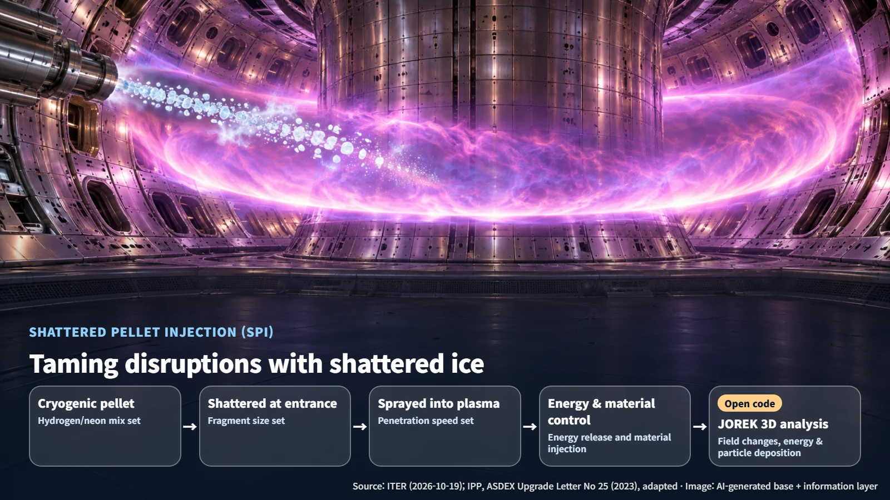

International · Fusion Simulation
Calculating a Plasma Disruption Before It Happens: ITER Highlights the Open-Source Release of the JOREK Code
ITER highlights open access to JOREK, a nonlinear MHD code used to calculate plasma disruptions and their loads, as validation against experiments continues.
Hearing that the plasma inside a fusion reactor can suddenly collapse may sound alarming at first. It helps to look at what actually happens inside the machine at that moment, and at what it means to calculate that moment on a computer in advance.
On October 19, 2026, the Science Division of ITER, the international fusion collaboration, cited an announcement from EUROfusion to report that the JOREK magnetohydrodynamic simulation code is now available to researchers worldwide through a public repository. The ITER Organization itself has contributed to JOREK's development. The code has been opened up the open-source way: its source code is published so that anyone can use it, modify it and contribute to it.
Plasma Disruptions and the Loads They Place on the Wall
The plasma in a fusion reactor is an extremely hot gas held in an invisible container made of magnetic fields. A plasma disruption happens when the balance inside that container is suddenly lost and the stored energy pours outward. The components inside the vacuum vessel are what catch that energy, so ITER uses JOREK to assess disruptions and the resulting thermal and electromagnetic loads.
The analytical framework for this phenomenon is magnetohydrodynamics (MHD). It treats the plasma as a flowing fluid and calculates how that flow and the magnetic field push and pull on each other. Picture a net of rubber bands tangled over a river: when the water moves, the net stretches, and when the net pulls, the current changes course. JOREK applies this calculation to nonlinear three-dimensional geometry, and it also offers a hybrid fluid-kinetic extension that adds the effects of particle motion to the fluid calculation. The cross-section of the doughnut-shaped machine is divided into small pieces (finite elements), while the direction running around the doughnut is represented as a sum of waves.
Taming Disruptions with Shattered Ice: Shattered Pellet Injection
One tool ITER is studying to soften the impact of a disruption is shattered pellet injection (SPI). A pellet frozen at cryogenic temperature is shattered at the entrance and sprayed into the plasma like buckshot. By adjusting fragment size, penetration speed and the mix of hydrogen and neon, operators control energy release and material injection during the disruption.

At ASDEX Upgrade (AUG), the German experimental facility, a 2023 report found that the fraction of radiated energy and its spatial asymmetry changed with the neon content. It also reported that larger fragments and higher penetration speeds tended to favor material injection. JOREK simulates the three-dimensional changes in the magnetic field caused by SPI, along with energy and particle deposition, and is used in research that analyzes disruption loads and mitigation effects.
Runaway electrons (RE) also need attention during a disruption. They are a population of electrons that can be accelerated to relativistic energies at the moment of disruption, meaning speeds approaching the speed of light. Think of a bicycle with its brakes released on a downhill slope, picking up speed the whole way. The Max Planck Institute for Plasma Physics (IPP) in Germany has explained that models treating runaway electrons as a fluid have limits in representing the electrons' velocity distribution, and it has reported development work that couples them with particle models.
Three Checks for Trusting an Open Code
Once a code is public, more researchers can contribute to it and compare it against experiments. To rely on its results, three checks are carried out in turn.
The first is regression testing. Starting from a saved calculation state, the code computes one time step and the result is compared with reference values. It is like cooking the same dish with the same ingredients after tweaking the recipe to see whether the taste has changed: it catches results that shifted because of a code change.
The second is convergence testing. Researchers vary the grid resolution, the time step and the numerical stabilization coefficients, and watch the growth rates and the state of convergence. If a photo keeps the same picture as the pixel count goes up, that is a sign the calculation has stabilized.
The third is experimental validation. The calculated results are compared with real experimental diagnostic values and their uncertainties. The first two checks ask whether the calculation was done correctly; this step asks whether the calculation captured reality.
Next Steps: Reproducing Benchmark Cases and Comparing with Experiments
IPP's Scientific Report 2023–2025 describes three-dimensional SPI analysis of AUG and quantitative comparison with experiments as work in progress. Quantitative validation data for individual devices are now being gathered. The user documentation is also being built out. As of October 20, 2026, the guide for running an SPI simulation is still being written, and the regression-testing documentation is marked for an update to match the GitHub workflow.
The code has been released under the LGPLv3.0-or-later license, and contributors go through a DCO 1.1 sign-off process. Separate community rules also cover matters such as paper citation and co-authorship. For a public code, trust grows as many researchers reproduce the same benchmark cases and results compared against experimental data from each device accumulate.
Plasma disruptions are a challenge that fusion reactors still have to solve, and a tool for calculating that moment in advance is now in the hands of many more researchers. The trust that builds as calculation and experiment check each other brings fusion one step closer to reality.